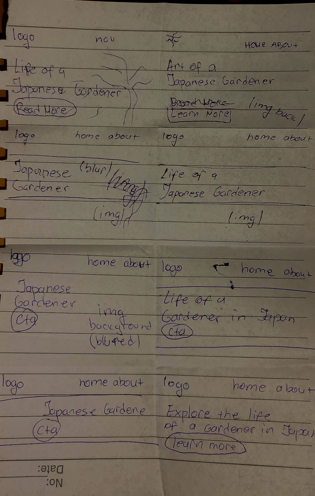
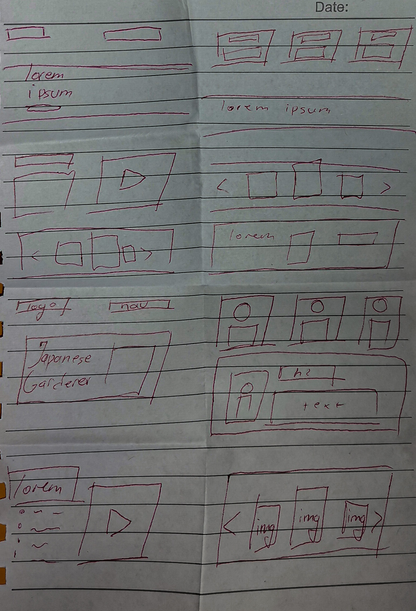

Challenge
Design a landing page for a gardener in Japan
Solution
Create something that will be usefull to everyone, no matter for which information they're here for, the goal is for the users to find whatever they're looking for.

Choosing which process to follow
First step: Research
Doing research about this topic/subject
First i started with doing research on this subject to get to know the topic. I was reading more
about Japanese traditional gardens, after i read about them, i started visiting sites about gardeners and read something more about them
because i had to combine those two topics. After having a solid knowleage i went to the next step.
The most usefull sites for me were these:
Do a research
- Do a research on the topic
- Find similar sites
- Find the target audience
- Who will use it?
- When will someone use it?
- Why will someone use it?
Second Step: Creating Personas
In this phase i was doing a research about the target audience. The questions that i asked myself the most were
- Who will use it?
- Why will they use it?
- How will it help the users?
- What are the users looking for?
Creating personas varies between 3-8, it depends on how many you need. I created 3 personas:
- One for a traveler looking for informations.
- One for a research needs.
- One for a decoration inspiration.
- Who will use it?
- Why will they use it?
- How will it help the users?
- What are the users looking for?

Short Description
I created this persona in which i wanted to represent a middle aged person that is just looking for an inspiration for decorating her garden, this persona as we said is middle aged and not very good with technology. So we are making our product to be as easiest and simpliest for understanding.
Short Description
The second persona that i created is representing a person that wants to travel and explore the gardens in Japan, he is just searching for informations to gather before traveling. Here we are aiming to make sure that we have the right informations that will be useful for our users.


Short Description
The third persona that i created is representing a student that has to do a research about Japanese gardens and needs to gather more informations. With this persona, our product finds use for even the younger users, with the right informations we are able to be helpful.
Third Step: Exploring
In this phase,i was spending the time most on reading, exploring some other pages and looking some videos on youtube.
The most usefull link for informations was Japanese garden - Wikipedia
The other pages gave me more inspiration
Final Step: Designing Solutions
In this phase i first started with doing sketchs(trying out 8 minutes rule) on paper and later i started trying to do low-fidelity wireframes in Adobe XD. I think that the 8 minutes rule gave me way more ideas and it was more fun. The goal was to try to accomplish was a minimalistic look, and the 8 minutes sketches gave me way more ideas that i wouldn't consider if i didn't try the sketch.

Sketching time!
- Try the 8mins rule
- Do more sketches
- Try everything that comes to your mind
8 Minutes Rule
 Low Fidelity Sketches


Finding which color to use
Green is a cool color that symbolizes nature and the natural world. Perhaps because of its strong associations with nature, green is often thought to represent tranquility, good luck, health, and jealousy. Researchers have also found that green can improve reading ability. Some students may find that laying a transparent sheet of green paper over reading material increases reading speed and comprehension. Green has long been a symbol of fertility and was once the preferred color choice for wedding gowns in the 15th-century. Even today, green M&M's (an American chocolate candy) are said to send a sexual message. Green is often used in decorating for its calming effect. For example, guests waiting to appear on television programs often wait in a “green room” to relax.
Source: The Color Psychology of Green


Images
For images i used mostly unsplash and freepik only one is from google and that is the one for Takuma Tono
The Final Result

Conclusion
What i learned from doing this project is that the designing comes last, before doing this project i always started with the designing solutions and ideas first,
and now i learned that it's much easier when we go step by step, doing the research, targeting out audience, getting to know our users.
All of these steps helped me a lot, and all of the reading and exploring that i did for this project gained me much more knowleage.
I used to not give much attention to the UX part, i was not doing the researches that deep and i didn't knew how important it is to know your users,
and when i did the research i discovered so many articles which reading them made me realize how much little things can change the user experience and make it better.
After this project i can say that i definitely learned new things, discovered intresting articles, I started paying more attention to the user experience, and after doing all that
research about the topic, i felt more organized and prepared than when i didn't used to do much research.